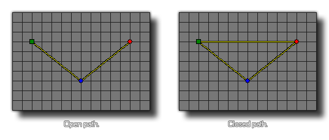

path_set_closed(index, closed);
| Streit | Beschreibung |
|---|---|
| index | Der Index des zu ändernden Pfads. |
| closed | Ob der Pfad geschlossen ist (wahr) oder nicht (falsch). |
Rückkehr: N / A
Diese Funktion kann verwendet werden, um einen bestimmten Pfad als offen (falsch) oder geschlossen (wahr) zu markieren. Ein geschlossener Pfad hat seinen Anfangspunkt, der mit seinem Endpunkt verbunden ist, und bildet eine Schleife, und ein offener Pfad hat einen definitiven, nicht verbundenen Anfang und Ende. Diese Funktion ändert die tatsächliche Pfadressource und beeinflusst somit permanent, wie der Pfad von allen Instanzen im Spiel vom Moment der Verwendung der Funktion bis zum Ende des Spiels verwendet wird.

path_set_closed(path0, true);
Dadurch wird der in der Ressource "path0" indizierte Pfad als geschlossener Pfad festgelegt.